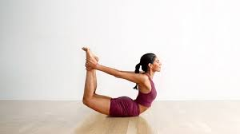
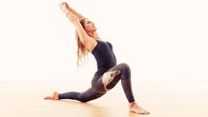
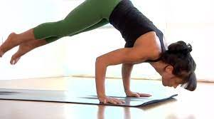

YOGA
Pregnancy is a special time in a woman's life that is ripe for nurturing, slowing down, and reflecting. Practicing yoga during pregnancy can prepare a woman’s mind and body for the wild, magical journey of pregnancy and childbirth. Physically speaking, prenatal yoga can build stability in the lower back, strengthen the uterus and pelvic muscles, and improve circulation, all of which supports the body during pregnancy and childbirth. From an emotional perspective, prenatal yoga helps to create mental space for reflection and cultivating connection with that deep intuitive self that is necessary for mamas when riding the turbulent waves of childbirth and beyond in a conscious and loving way.
Yoga poses to avoid when pregnant in First Trimester
Abdominal Poses

Consider avoiding poses that require contraction of the abdomen (e.g., boat, low boat), especially during the first trimester. Transverse abdominal exercises practiced in the second and third trimester, however, can support a healthy and strong back and will aid in pushing during labor.
Backbends

Intense backbends such as full wheel can potentially overstretch the abdominal muscles, so should be practiced with caution or skipped altogether. Emphasis should be placed on safe backbends that target opening of the upper back rather than exacerbating the already present arch of the lower spine, and opening the chest to counteract rounding of the shoulders and upper back, a byproduct of the growing and expanding belly.
Breathing Techniques
Consider avoiding breathing techniques that require breath retention or quick, rapid movements of the belly like breath of fire or bellows breath. This said, I practiced alternate nostril breathing but without breath retention during my pregnancy as I found this practice to quickly ground me in my body and clear the clutter from my mind, preparing me for my sitting practice. You may also want to consider modifying ujjiyi given that often times, expectant mamas experience stuffy noses due to inflamed mucous membranes. Also, when in labor the tendency is to breathe in through the nose, out through the mouth.
Deep or closed Twists

It is best to refrain from closed twists (think revolved triangle, lunge), which are optimal for the nonpregnant body as they work to compress and cleanse the internal organs. However, for pregnant women, deep twists could affect blood flow and oxygen traveling to baby. Instead, focus on open twists with baby pointed forward, which aligns with the idea of creating space for baby to grow and expand in utero.
Full Inversion
Inversions such as headstand and shoulderstand could send mixed signals to the baby. You want head facing down. Milder inversions with head below the heart such as downward dog and separate leg forward fold are fine, but if you experience nausea or feel discomfort when bringing head down, either come out of the pose early or refrain from practicing it.
Jumping transitions

Jumping forward and back in sun salutations may disturb the implantation process during the first trimester. Again, connect to your intuition and tune in to what feels right for your body. Hormonal fluctuations during pregnancy can have unexpected effects on the body. Some mamas will implement little to no modifications (including inversions) all the way up until their due date.